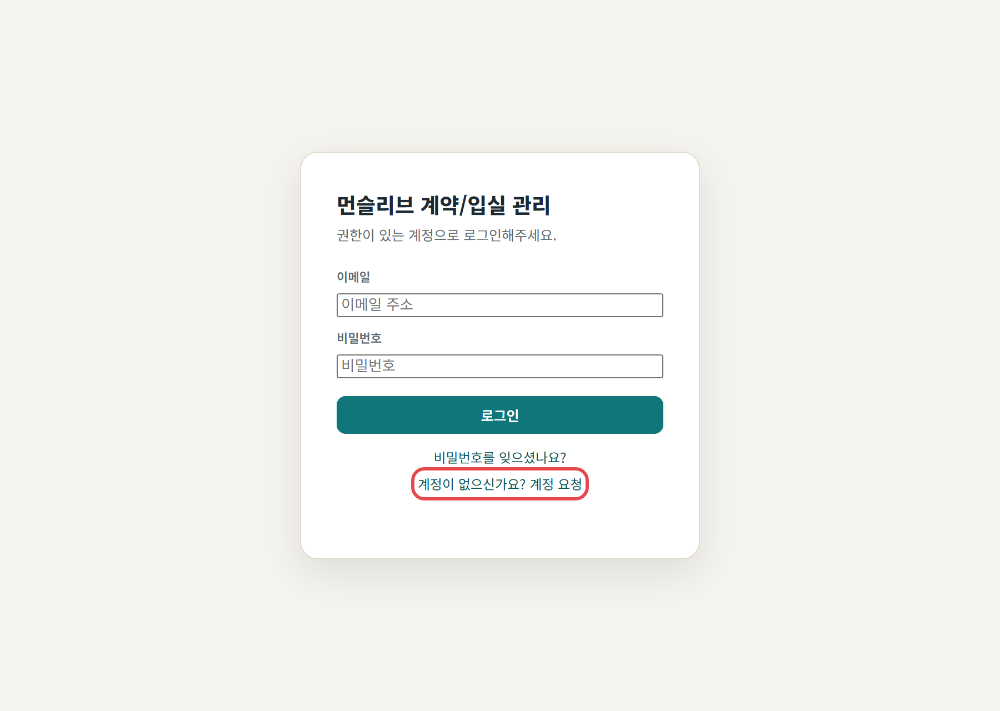
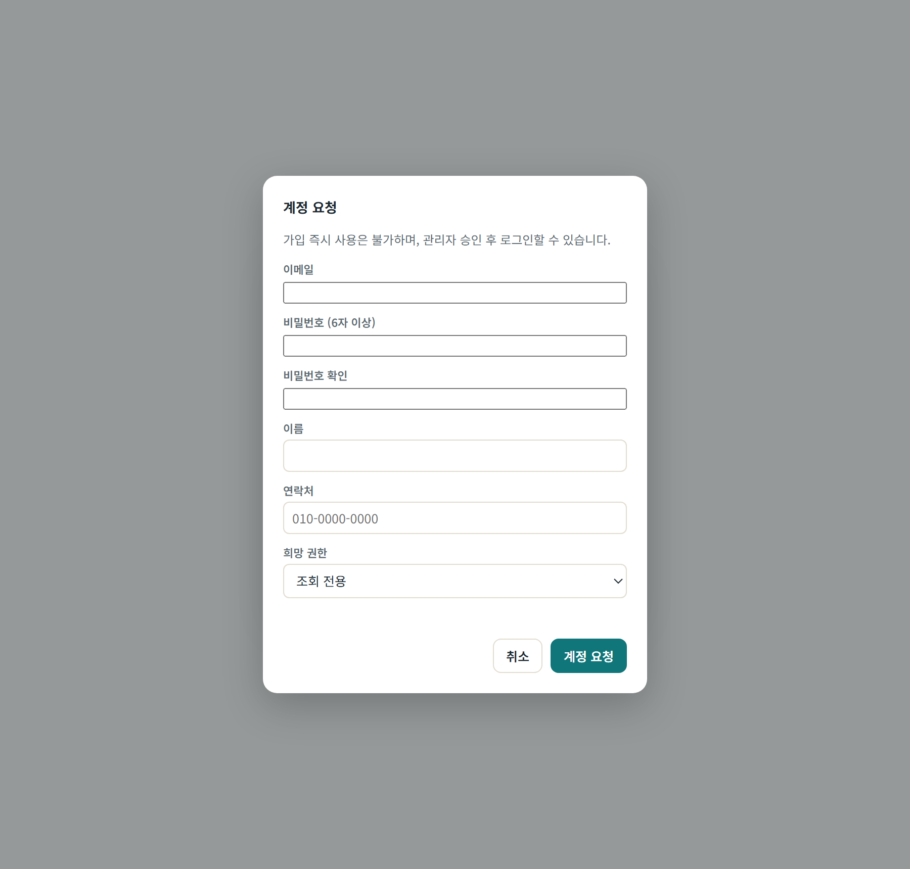
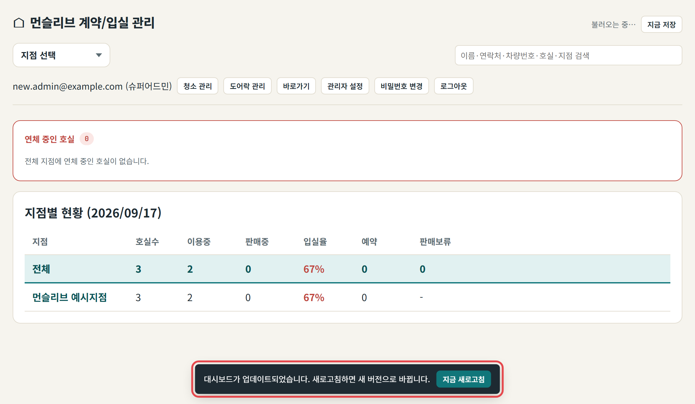
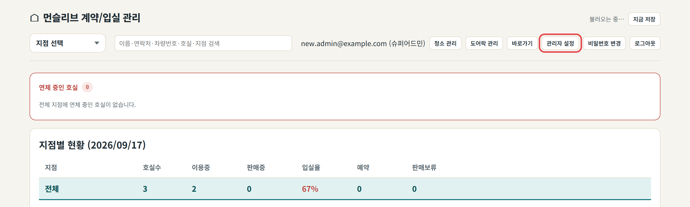
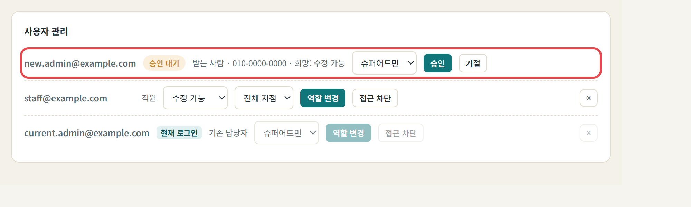
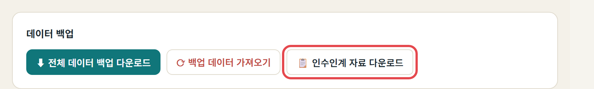
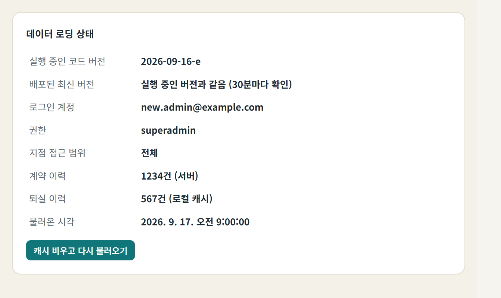

| 바로가기 | 쓰는 단계 |
|---|---|
| 운영 대시보드 | 1·4·5·6단계 |
| GitHub 가입 | 1단계 |
| GitHub 조직 구성원(People) | 2·6단계 |
| GitHub 저장소 Dashboard-Branch | 2단계 |
| GitHub 저장소 Calculator | 2단계 |
| Firebase 콘솔 | 3·4·6단계 |
| Firebase 사용자 및 권한 | 3·6단계 |
| GitHub 도움말: 조직에 사용자 초대하기 | 2단계 |
| Firebase 도움말: IAM으로 프로젝트 액세스 관리 | 3단계 |
운영 대시보드의 권한은 세 곳에 나뉘어 있습니다. 세 곳 모두에서 받는 사람이 최고 권한으로 작업되는 것을 확인한 뒤 기존 담당자 권한을 빼면 이관이 끝납니다. 필요한 주소는 위 바로가기에 모았습니다.
| 구분 | 위치 | 이 권한으로 하는 일 | 넘길 역할 |
|---|---|---|---|
| 코드 | GitHub 조직 Monthliv의 저장소 Dashboard-Branch(대시보드), Calculator(연장·환불 계산기) | 화면·기능 수정, 배포(main에 올리면 GitHub Pages가 자동 반영) | 조직 Owner 또는 저장소 Admin |
| 데이터 | Firebase 프로젝트 monthliv-482bd | 로그인 계정, 저장 데이터(Firestore), 보안 규칙 게시 | 프로젝트 소유자 |
| 운영 | 대시보드 관리자 설정 | 사용자 승인·권한 변경, 가격표·계약·백업 등 관리자 기능 | 슈퍼어드민 |
기존 담당자 권한은 반드시 마지막 단계에서 뺍니다. 세 곳 모두 최고 권한자가 한 명 이상 남아 있어야 합니다.
받는 사람은 아래 계정 세 개를 먼저 준비합니다. 모두 본인 명의 계정이어야 하며, 기존 담당자 계정을 함께 쓰지 않습니다.
| 계정 | 용도 | 준비할 것 |
|---|---|---|
| GitHub 계정 | 코드 수정·배포 | GitHub 사이트에서 가입, 2단계 인증 켜기(조직이 요구할 수 있음) |
| Google 계정 | Firebase 콘솔 접속 | 업무용 Google 계정(Gmail 또는 Google Workspace) |
| 대시보드 계정 | 대시보드 로그인 | 대시보드 로그인 화면의 "계정이 없으신가요? 계정 요청"으로 신청 → 승인 대기 상태가 됨 |
로그인 화면의 "계정 요청"(빨간 테두리)을 누르면 계정 요청 창이 열립니다. 이메일·비밀번호·이름·연락처를 적고 희망 권한은 "수정 가능"을 고릅니다. 슈퍼어드민은 4단계에서 승인할 때 정합니다. 이 페이지의 화면 사진은 예시 데이터로 찍은 것입니다.


받는 사람은 세 계정의 아이디(GitHub 사용자명, Google 이메일, 대시보드 가입 이메일)만 기존 담당자에게 알려 줍니다. 비밀번호는 알려 주지 않습니다.
받는 사람을 Monthliv 조직의 Owner로 초대하면 두 저장소의 수정·배포와 조직 설정까지 넘어갑니다. 저장소만 맡길 때는 저장소별 Admin으로 초대합니다.
git clone https://github.com/Monthliv/Dashboard-Branch.gitgit config user.name "본인 이름", git config user.email "본인 이메일"로 커밋에 본인 이름이 남게 합니다.index.html 한 파일입니다. 고쳐서 main에 올리면(push) 보통 1분 안팎에 GitHub Pages에 반영됩니다.index.html의 APP_BUILD 값을 YYYY-MM-DD-글자 형식으로 바꿉니다(예: 2026-09-17-a, 같은 날 두 번째는 -b).GitHub 화면 안내는 바로가기의 공식 도움말 "조직에 사용자 초대하기"를 봅니다(People → Invite member → 역할 선택 → Send invitation).
배포하고 나면 켜 둔 대시보드 화면 아래에 30분 안에 이 안내가 뜹니다.

받는 사람을 monthliv-482bd 프로젝트의 소유자로 추가합니다. 보안 규칙은 저장소가 아니라 Firebase 콘솔에만 있어서, 새 기능에 규칙을 더할 때 이 권한이 꼭 필요합니다.
Firebase 화면 안내는 바로가기의 공식 도움말 "Firebase IAM으로 프로젝트 액세스 관리"를 봅니다(설정 → 사용자 및 권한에서 소유자·편집자·뷰어 역할 지정). 권한 화면은 바로가기의 "Firebase 사용자 및 권한"으로 바로 열 수 있습니다.
| 위치 | 담긴 내용 |
|---|---|
monthliv/state | 지점·호실·입실자(대시보드 핵심 데이터) |
monthliv/roomPrices | 방 가격표(연장·환불 계산기와 공유) |
monthliv/doorlock, monthliv/doorlockPublic | 도어락 관리 |
contracts | 계약 이력 |
residentHistory | 퇴실 이력 |
editHistory | 방·입실자 수정이력 |
changeLog | 변경 로그 |
backups | 매일 자동 백업 |
users, emailIndex | 대시보드 계정·권한 |
기존 담당자가 받는 사람의 계정 요청을 슈퍼어드민으로 승인합니다. 슈퍼어드민만 관리자 설정과 사용자 관리를 쓸 수 있습니다.
위쪽의 "관리자 설정"(첫 사진)을 누르고, 사용자 관리에서 받는 사람 줄의 역할을 "슈퍼어드민"으로 바꿔 승인합니다(둘째 사진).


superadmin이면 됩니다.| 역할 | 할 수 있는 일 |
|---|---|
| 슈퍼어드민 | 모든 지점 조회·수정, 관리자 설정, 사용자 승인·권한 변경 |
| 수정 가능 | 허용된 지점 조회·수정(관리자 설정 없음) |
| 조회 전용 | 허용된 지점 조회만(입실자 이름 일부 가림) |
| 줄 | 버튼 | 하는 일 |
|---|---|---|
| 승인 대기 | 승인 | 고른 권한·지점 범위로 사용을 허락 |
| 승인 대기 | 거절 | 요청을 사용자 목록에서 지움(되돌릴 수 없음) |
| 쓰고 있는 계정 | 역할 변경 | 권한·지점 범위 저장 |
| 쓰고 있는 계정 | 접근 차단 | 계정은 두고 승인 대기로 돌림(다시 승인하면 복구) |
| 쓰고 있는 계정 | ×(맨 오른쪽) | 계정 삭제: 사용자 목록에서 지움(되돌릴 수 없음) |
거절과 ×는 대시보드 사용자 목록에서 지웁니다. 지운 사람이 다시 로그인하면 승인 대기로 다시 나타납니다.
로그인한 본인 줄에는 "현재 로그인" 표시가 붙고 역할 변경·접근 차단·계정 삭제(×)가 잠깁니다. 본인 계정은 다른 슈퍼어드민 계정으로 처리합니다.
슈퍼어드민이 한 명도 남지 않으면 대시보드 안에서는 권한을 고칠 수 없습니다. 이때는 Firebase 콘솔 → Firestore Database → users → 해당 계정 문서의 role 값을 superadmin으로 직접 바꿉니다.
코드만 봐서는 알 수 없는 운영 제약은 대시보드에서 문서로 내려받아 함께 넘깁니다.
monthliv_인수인계_날짜.md). 운영 현황과 제약·주의점이 들어 있습니다.index.html 안의 HANDOVER_NOTES에 기능별로 "왜 이렇게 만들었는지"와 되돌린 시도가 쌓여 있습니다. 코드를 고치면 여기에도 한 줄 추가합니다.
받는 사람이 세 곳에서 직접 작업해 본 뒤, 기존 담당자 권한을 대시보드 → Firebase → GitHub 순서로 뺍니다. 정리는 받는 사람 계정으로 합니다.
superadmin이다.APP_BUILD만 올린 작은 수정을 main에 올려, 열어 둔 대시보드에 30분 안에 "지금 새로고침" 안내가 뜬다.받는 사람 계정으로 연 관리자 설정 → 데이터 로딩 상태입니다. 로그인 계정이 받는 사람이고 권한이 superadmin이면 됩니다.

세 곳 모두 최고 권한자(조직 Owner, 프로젝트 소유자, 슈퍼어드민)가 한 명 이상 남아 있어야 합니다. 받는 사람 권한을 먼저 확인하고 기존 권한을 뺍니다.
체크 표시는 이 브라우저에만 저장됩니다.